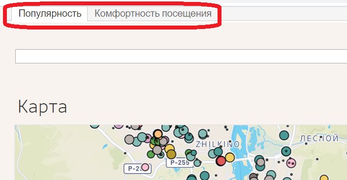
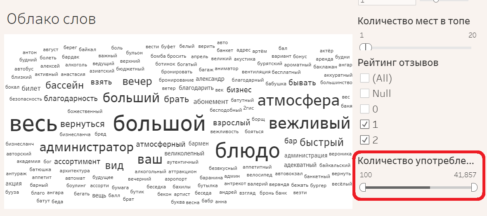
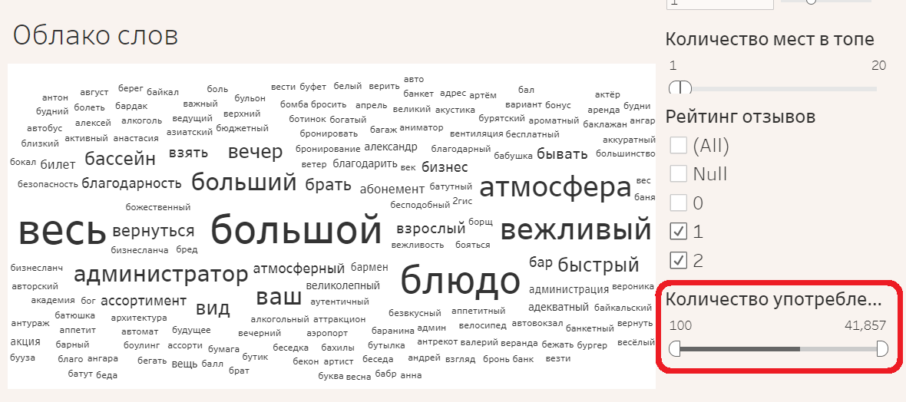
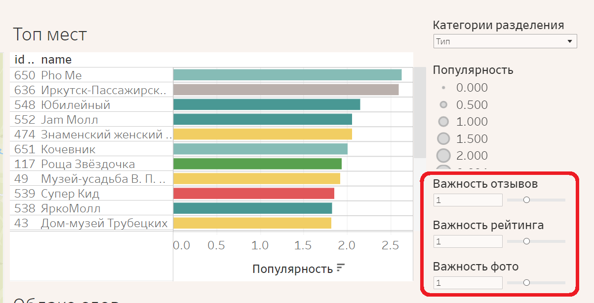
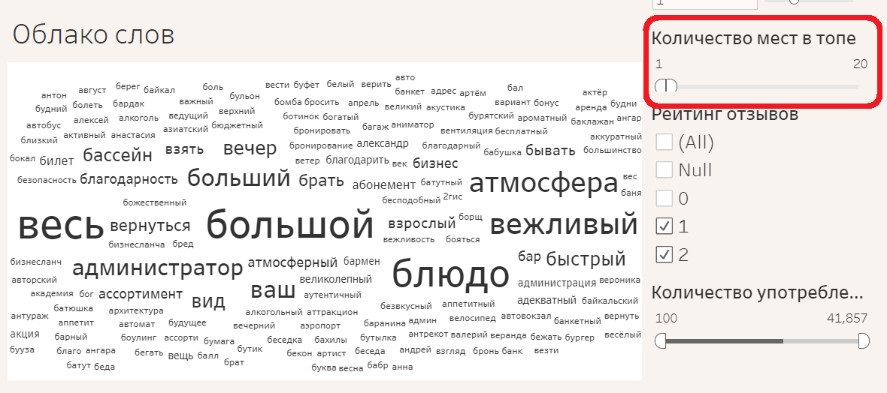
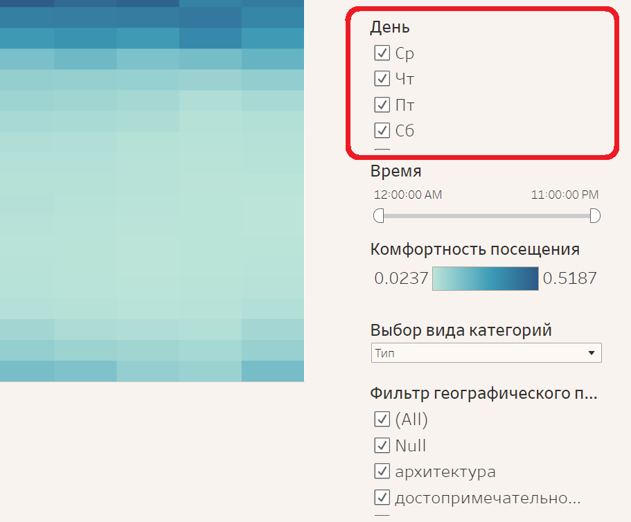
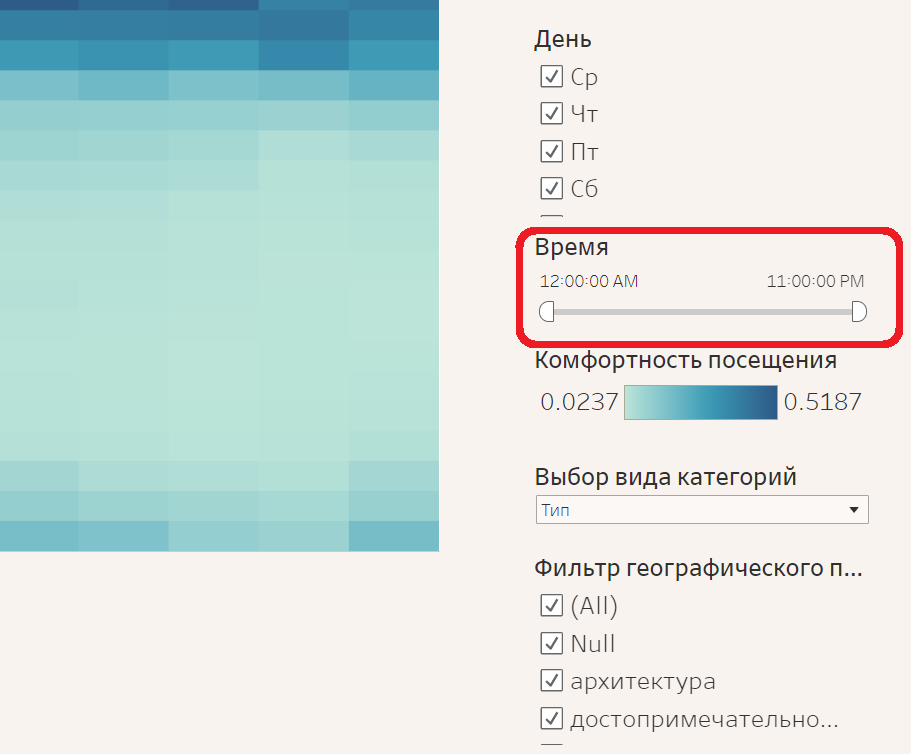
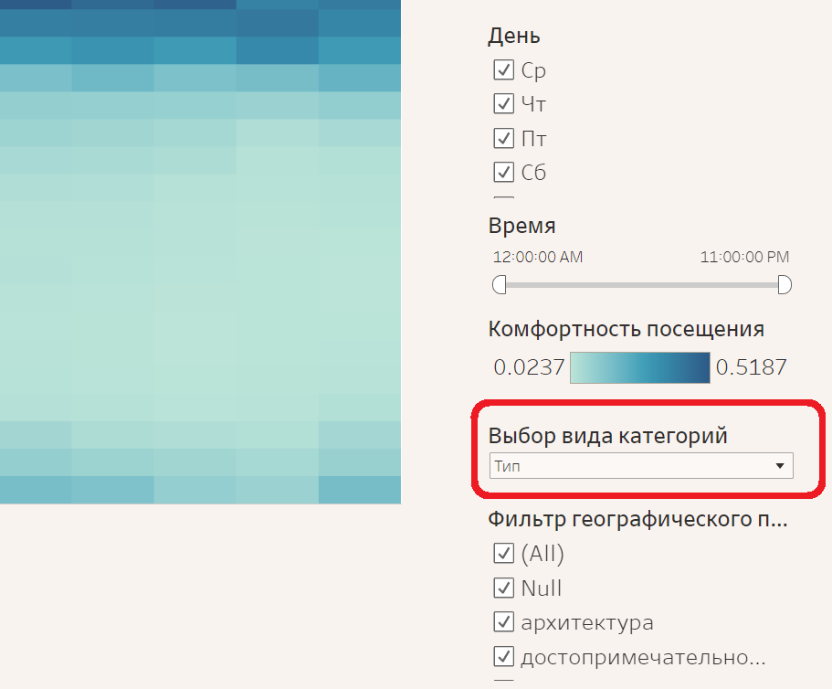
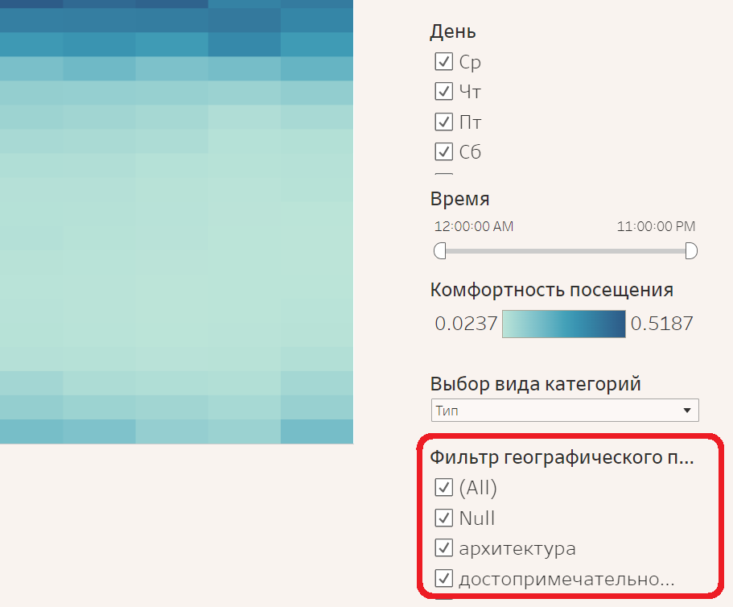

Инструкция к данному инструменту
Вкладки
Инструмент состоит из двух вкладок: популярность и комфортность посещения. Популярность содержит карту с информацией о локациях, категории локаций, облако слов по отзывам и показатели популярности, основанный на отзывах, оценках и фотографиях. Комфортность посещения содержит данные о комфортности посещения локаций, основанные на загруженности и популярности места.
Популярность мест
На данной кладке присутствуют несколько визуализаций:
- карта, на которой обозначены все точки, размер которых соответствует популярности места, а цвет - категории места;
- Выбор категории, на которой вы можете выбрать интересующую вас категорию мест, по которым будет производиться поиск;
- Топ мест по популярности, цвет которых соответствует категории места;
- Облако слов по отзывам.
- Поиск вверху страницы. Позволяет искать локации.
- Категория разделения. Позволяет выбирать, на какие виды категорий будет делиться карта.
- Важность отзывов. Позволяет установить то, насколько значимо количество отзывов при вычислении популярности места.
- Важность рейтинга. Позволяет установить то, насколько значим рейтинг при вычислении популярности места.
- Важность фото. Позволяет установить то, насколько значимо количество фото при вычислении популярности места.
- Количество мест в топе. Позволяет установить то, какой диапазон мест будет выведен в топе мест, отфильтрованных по популярности
- Рейтинг отзывов. Позволяет установить то, слова из каких отзывов будут использоваться для отзывов
- Количество употреблений. Позволяет установить то, насколько частые слова будут использоваться в облаке
 


Панель установки весов
Так же фильтровать значения можно с помощью самих панелей.
- В выборе категорий вы можете выбрать то, какую категорию мест будут отображать другие панели (карта, топ и облако).
- В топе мест вы можете выбрать место, которое выведут карта и облако слов.
- В облаке слов вы можете выбрать место, чтобы построить по нему топ мест.
Комфортность посещения
Данная вкладка позволяет получить информацию о комфортности посещения места. Комфортность посещения выисляется как отношение популярности к загруженности в единицу времени. На данной вкладке присутствуют следующие визуализации
- Топ мест по комфортности посещения
- Тепловая карта комфортности посещения
- Карта
Вы можете выбрать место в топе, чтобы получить на тепловой карте график комфортности посещения этого места на всю неделю. Вы можете выбрать время на тепловой карте, чтобы получить топ мест по этому времени.
Вы можете ограничивать время и дни вывода.


Основы исследования
Вычислениея показателей
Данный инструмент позволяет
Первый целевой показатель - популярность места. Популярность места вычисляется по сумме средневзвешенных арифметических групповых показателей:
P = Xrat*Wrat+Xrev*Wrev+Xpht*Wpht
где X - нормированный показатель величины, W - вес (значимость) величины, rat - рейтинг, rev - количество отзывов, pht - количество фото.
Второй целевой показатель - комфортность посещения. Комфортность вычисляется как отношение популярности места к его загруженности в конкретный момент времени. Считается, то наибольшей комфортностью посещения обладают места с высокой популярностью в моменты, когда они меньше всего загружены.
Oi=Pi/Vi,d,t